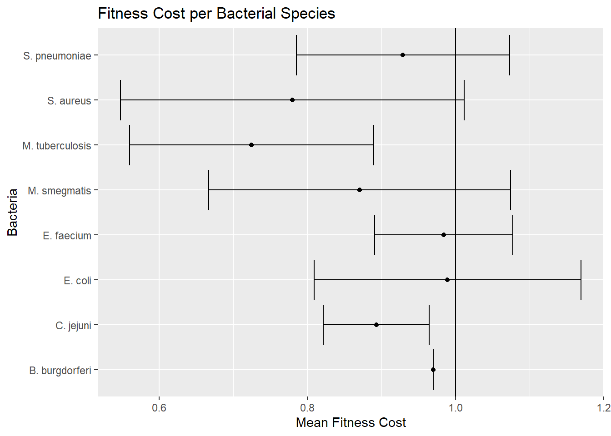

Chapter 18 Mean relative fitness and 95% CI of antibiotic Resistance mutation
associated with a specific antibiotic, Fitness cost < 1 indicates less fit and Fitness Cost > 1 associated with more fit.

The antibiotic Trimethoprim has mean fitness of cost of greater than 1, indicating that the gene mutation that creates resistance to Trimethoprim does not negatively impact microbial fitness. Trimethoprim is a member of the drug class dihydrofolate reductase inhibitors. This finding correlates with the graph of fitness and drug class.
 Resistance mutations in two species, Enterococcus faecium and Borrelia burgorferi, showed no evidence for a fitness cost. Other bacteria species had a fitness cost to Mean relative fitness and 95% CI of antibiotic resistance mutation associated with a given bacteria Fitness cost < 1 indicates less fit.
#Create a heat map with antibiotic and bacteria as the two categorical variables and fitness as a numeric variable.
## `summarise()` has grouped output by 'bacteria', 'antibioticType'.
## You can override using the `.groups` argument.
Analysis of Staph aureus gene mutations How many Staph aureus gene mutations associated with fitness is < 1, indicating less fit?
## n
## 1 44How many Staph aureus gene mutations associated with fitness is > 1, indicating improved fitness?
## n
## 1 5There are 5 gene mutations in Staph aureus associated with improved microbial fitness and 44 gene mutations associated with a decrease in fitness.
What are the gene mutations associated with a decrease and increase in microbial fitness.
BacterialessFIT <- costR %>%
select(bacteria, gene_mutation, fitness) %>%
filter(bacteria == "S. aureus" & fitness < 1.0) %>%
distinct(gene_mutation) %>%
rename("Gene Mutation" = gene_mutation)
BacterialessFIT## Gene Mutation
## 1 rpoB V1080I
## 2 rpoB V1080L
## 3 rpoB E1084K
## 4 rpoB D1101E
## 5 rpoB S1127L
## 6 rpoB S1127P
## 7 rpoC K334N
## 8 rpoC T925K
## 9 rpoC T925R
## 10 rpoC G1172C
## 11 rpoC G1172D
## 12 gryB G85S
## 13 gyrB R144S
## 14 gyrB T173I
## 15 DHFR H150R
## 16 EF-G A67T
## 17 EF-G P406L
## 18 EF-G S416F
## 19 EF-G H457Y
## 20 grlA S80F
## 21 grlA S80Y
## 22 rpoB N471Y
## 23 rpoB N471Q
## 24 rpoB N471G
## 25 rpoB I527F
## 26 rpoB S464P
## 27 rpoB N474K
## 28 rpoB A477V
## 29 rpoB A477N
## 30 rpoB R484H
## 31 rpoB S486L
## 32 rpoB Q468R
## 33 rpoB Q468L
## 34 rpoB H481Y
## 35 rpoB D471E
## 36 rpoB Q137L
## 37 rpoB L466S
## 38 rpoB H481N
## 39 rpoB deltaL485
## 40 rpoB D471Y
## 41 rpoB L488S
## 42 rpoB P519L
## 43 rpoB A477D
## 44 rpoB H481DBacteriaMoreFit <- costR %>%
select(bacteria, gene_mutation, fitness) %>%
filter(bacteria == "S. aureus" & fitness > 1.0) %>%
distinct(gene_mutation) %>%
rename("Gene Mutation" = gene_mutation)
BacteriaMoreFit## Gene Mutation
## 1 DHFR L41F
## 2 DHFR F99S
## 3 DHFR F99Y
## 4 grlA E84K
## 5 grlA A116EThree of the five gene mutations that are associated with improved fitness and mutations in the gene that codes for the dihydrofolate reductase inhibitor.